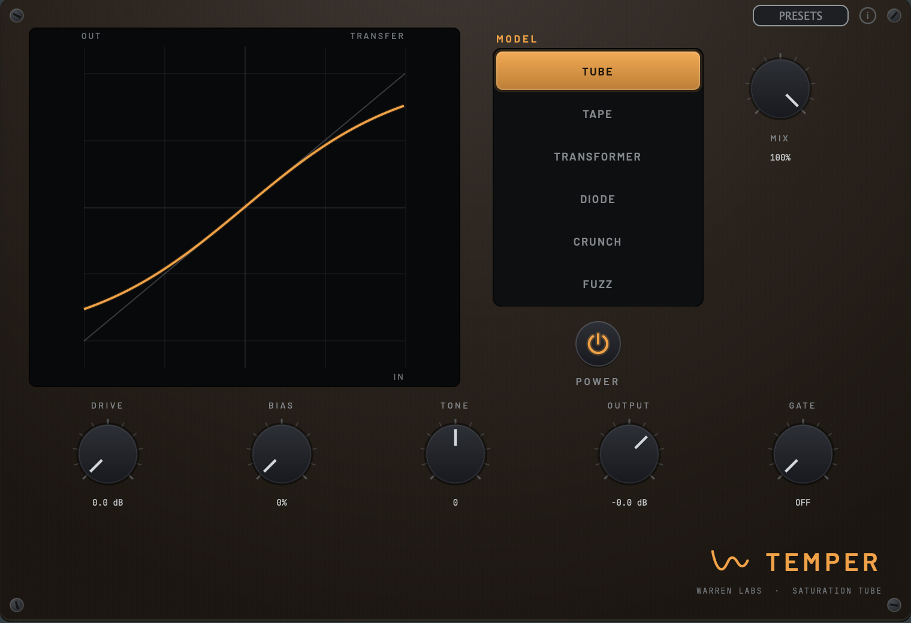

Character lineSaturation, drive + fuzzBeta
Temper
Controlled heat, all the way up.

One oversampled waveshaper, six models — from tube warmth and tape compression through transformer iron to diode overdrive, crunch and full fuzz. Bias sets the harmonic character, a velcro gate makes the dirt sputter and die with the note.
- Six models: Tube / Tape / Transformer / Diode / Crunch / Fuzz
- 4x oversampled, latency-compensated dry path
- Bias for even-vs-odd harmonics + velcro gate
- VST3 / AU / Standalone
Part of The Character Collection · $39
See The Character Collection →